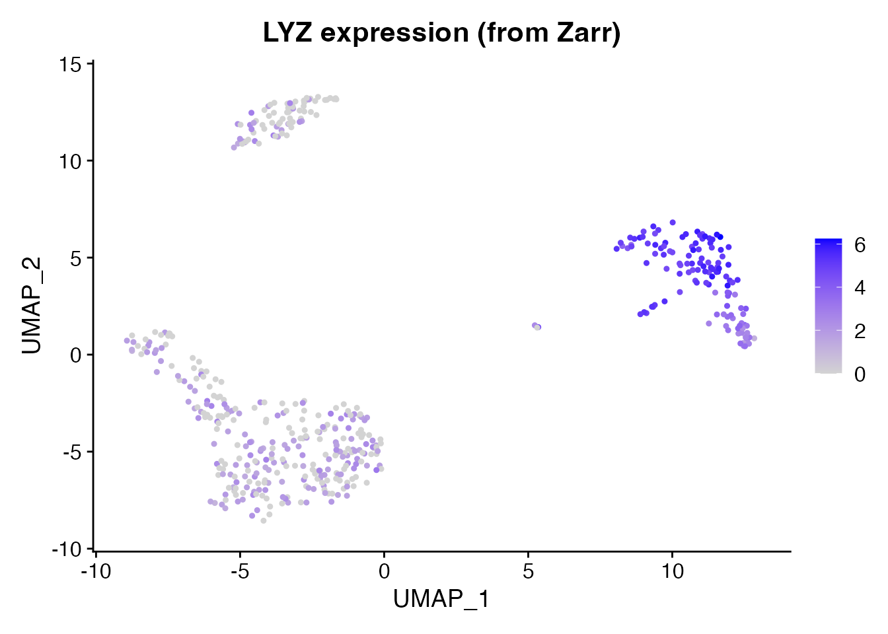
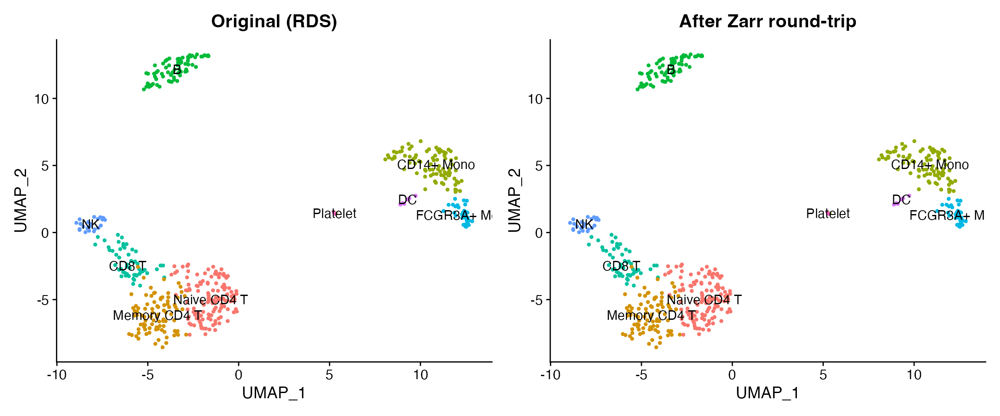

Introduction
Zarr is a directory-based format for chunked, compressed arrays. It is widely used in cloud-native single-cell workflows – including CELLxGENE Census and SpatialData – because each chunk is an independent file that can be read in parallel from object stores like S3 or GCS. scConvert reads and writes Zarr v2 stores following the AnnData on-disk specification, with no Python dependency.
Read a Zarr store
We start by reading a 500-cell PBMC dataset shipped as a Zarr store with scConvert. This dataset has 2000 genes, PCA/UMAP embeddings, neighbor graphs, and 9 annotated cell types.
zarr_path <- system.file("extdata", "pbmc_demo.zarr", package = "scConvert")
pbmc <- readZarr(zarr_path, verbose = FALSE)
pbmc
#> An object of class Seurat
#> 2000 features across 500 samples within 1 assay
#> Active assay: RNA (2000 features, 0 variable features)
#> 2 layers present: counts, data
#> 2 dimensional reductions calculated: pca, umap
DimPlot(pbmc, reduction = "umap", group.by = "seurat_annotations",
label = TRUE, pt.size = 0.8) +
ggtitle("PBMC data read from Zarr") + NoLegend()
LYZ is a strong monocyte marker. We can verify that expression values were loaded correctly from the Zarr store.
FeaturePlot(pbmc, features = "LYZ", pt.size = 0.8) +
ggtitle("LYZ expression (from Zarr)")
Write to Zarr and read back
Now we load the same dataset from its RDS representation, write it to Zarr, and read it back to verify round-trip fidelity.
pbmc_rds <- readRDS(system.file("extdata", "pbmc_demo.rds", package = "scConvert"))
rt_path <- file.path(tempdir(), "pbmc_roundtrip.zarr")
writeZarr(pbmc_rds, rt_path, overwrite = TRUE, verbose = FALSE)
pbmc_rt <- readZarr(rt_path, verbose = FALSE)
cat("Cells:", ncol(pbmc_rt), "| Genes:", nrow(pbmc_rt), "\n")
#> Cells: 500 | Genes: 2000
cat("Reductions:", paste(Reductions(pbmc_rt), collapse = ", "), "\n")
#> Reductions: pca, umapCompare original and round-trip
library(patchwork)
p1 <- DimPlot(pbmc_rds, reduction = "umap", group.by = "seurat_annotations",
label = TRUE, pt.size = 0.8) +
ggtitle("Original (RDS)") + NoLegend()
p2 <- DimPlot(pbmc_rt, reduction = "umap", group.by = "seurat_annotations",
label = TRUE, pt.size = 0.8) +
ggtitle("After Zarr round-trip") + NoLegend()
p1 + p2
Fidelity check
# Dimensions match
stopifnot(ncol(pbmc_rt) == ncol(pbmc_rds))
stopifnot(nrow(pbmc_rt) == nrow(pbmc_rds))
# Barcodes and features match
stopifnot(identical(sort(colnames(pbmc_rt)), sort(colnames(pbmc_rds))))
stopifnot(identical(sort(rownames(pbmc_rt)), sort(rownames(pbmc_rds))))
# PCA coordinates are exact
pca_diff <- max(abs(
Embeddings(pbmc_rds, "pca")[colnames(pbmc_rt), ] -
Embeddings(pbmc_rt, "pca")
))
stopifnot(pca_diff < 1e-10)
cat("All checks passed: dimensions, barcodes, features, and PCA are exact.\n")
#> All checks passed: dimensions, barcodes, features, and PCA are exact.Streaming converters
For converting between file formats without loading data into R, scConvert provides streaming converters that copy fields directly between backends:
# h5ad <-> Zarr (no Seurat intermediate)
H5ADToZarr("data.h5ad", "data.zarr")
ZarrToH5AD("data.zarr", "data.h5ad")
# h5Seurat <-> Zarr
H5SeuratToZarr("data.h5seurat", "data.zarr")
ZarrToH5Seurat("data.zarr", "data.h5seurat")
# Or use the universal dispatcher
scConvert("data.h5ad", dest = "data.zarr", overwrite = TRUE)These are particularly useful for large datasets where materializing the full Seurat object would be expensive.
Python interoperability
Zarr stores produced by writeZarr() are directly
readable by Python’s anndata.read_zarr() and scanpy.
Requires Python with anndata installed.
Session Info
sessionInfo()
#> R version 4.5.2 (2025-10-31)
#> Platform: aarch64-apple-darwin20
#> Running under: macOS Tahoe 26.3
#>
#> Matrix products: default
#> BLAS: /System/Library/Frameworks/Accelerate.framework/Versions/A/Frameworks/vecLib.framework/Versions/A/libBLAS.dylib
#> LAPACK: /Library/Frameworks/R.framework/Versions/4.5-arm64/Resources/lib/libRlapack.dylib; LAPACK version 3.12.1
#>
#> locale:
#> [1] en_US.UTF-8/en_US.UTF-8/en_US.UTF-8/C/en_US.UTF-8/en_US.UTF-8
#>
#> time zone: America/Indiana/Indianapolis
#> tzcode source: internal
#>
#> attached base packages:
#> [1] stats graphics grDevices utils datasets methods base
#>
#> other attached packages:
#> [1] patchwork_1.3.2 ggplot2_4.0.2 Seurat_5.4.0 SeuratObject_5.3.0
#> [5] sp_2.2-1 scConvert_0.1.0
#>
#> loaded via a namespace (and not attached):
#> [1] RColorBrewer_1.1-3 jsonlite_2.0.0 magrittr_2.0.4
#> [4] spatstat.utils_3.2-2 farver_2.1.2 rmarkdown_2.30
#> [7] fs_1.6.7 ragg_1.5.0 vctrs_0.7.1
#> [10] ROCR_1.0-12 spatstat.explore_3.7-0 htmltools_0.5.9
#> [13] sass_0.4.10 sctransform_0.4.3 parallelly_1.46.1
#> [16] KernSmooth_2.23-26 bslib_0.10.0 htmlwidgets_1.6.4
#> [19] desc_1.4.3 ica_1.0-3 plyr_1.8.9
#> [22] plotly_4.12.0 zoo_1.8-15 cachem_1.1.0
#> [25] igraph_2.2.2 mime_0.13 lifecycle_1.0.5
#> [28] pkgconfig_2.0.3 Matrix_1.7-4 R6_2.6.1
#> [31] fastmap_1.2.0 fitdistrplus_1.2-6 future_1.69.0
#> [34] shiny_1.13.0 digest_0.6.39 tensor_1.5.1
#> [37] RSpectra_0.16-2 irlba_2.3.7 textshaping_1.0.4
#> [40] labeling_0.4.3 progressr_0.18.0 spatstat.sparse_3.1-0
#> [43] httr_1.4.8 polyclip_1.10-7 abind_1.4-8
#> [46] compiler_4.5.2 bit64_4.6.0-1 withr_3.0.2
#> [49] S7_0.2.1 fastDummies_1.7.5 MASS_7.3-65
#> [52] tools_4.5.2 lmtest_0.9-40 otel_0.2.0
#> [55] httpuv_1.6.16 future.apply_1.20.2 goftest_1.2-3
#> [58] glue_1.8.0 nlme_3.1-168 promises_1.5.0
#> [61] grid_4.5.2 Rtsne_0.17 cluster_2.1.8.2
#> [64] reshape2_1.4.5 generics_0.1.4 hdf5r_1.3.12
#> [67] gtable_0.3.6 spatstat.data_3.1-9 tidyr_1.3.2
#> [70] data.table_1.18.2.1 spatstat.geom_3.7-0 RcppAnnoy_0.0.23
#> [73] ggrepel_0.9.7 RANN_2.6.2 pillar_1.11.1
#> [76] stringr_1.6.0 spam_2.11-3 RcppHNSW_0.6.0
#> [79] later_1.4.8 splines_4.5.2 dplyr_1.2.0
#> [82] lattice_0.22-9 survival_3.8-6 bit_4.6.0
#> [85] deldir_2.0-4 tidyselect_1.2.1 miniUI_0.1.2
#> [88] pbapply_1.7-4 knitr_1.51 gridExtra_2.3
#> [91] scattermore_1.2 xfun_0.56 matrixStats_1.5.0
#> [94] stringi_1.8.7 lazyeval_0.2.2 yaml_2.3.12
#> [97] evaluate_1.0.5 codetools_0.2-20 tibble_3.3.1
#> [100] cli_3.6.5 uwot_0.2.4 xtable_1.8-8
#> [103] reticulate_1.45.0 systemfonts_1.3.1 jquerylib_0.1.4
#> [106] dichromat_2.0-0.1 Rcpp_1.1.1 globals_0.19.1
#> [109] spatstat.random_3.4-4 png_0.1-8 spatstat.univar_3.1-6
#> [112] parallel_4.5.2 pkgdown_2.2.0 dotCall64_1.2
#> [115] listenv_0.10.1 viridisLite_0.4.3 scales_1.4.0
#> [118] ggridges_0.5.7 purrr_1.2.1 crayon_1.5.3
#> [121] rlang_1.1.7 cowplot_1.2.0